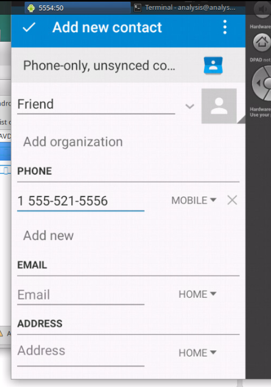
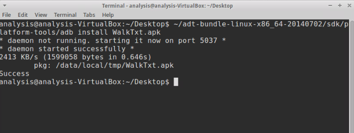
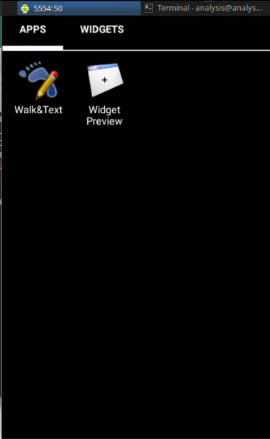

Week 9 & 10: Mobile Security
Name: Kevin Guan
For the last weeks of nine through ten, the main focus was aimed towards non-PC platforms, particularly mobile security. This topic will be explored via analyzing the systems of Android smartphones and discuss the elements that explain why smartphones are more susceptible to attacks than personal computers.
For the history of the smartphone age, the smartphone revolution first started when the company, Apple, released the iPhone in 2007. During this era, the most common malware that targeted mobile devices is usually SMS-based Trojans. Eventually, after two years, one of the first mobile botnets, known as a symbian worm, was found to be spreading via URL through SMS. The rate at which mobile-based malware advanced grew from there. By December 2010, Genimi, the first Android botnet, was repackaged and distributed throughout many third-party markets in China. The Android botnet was able to leak sensitive information about the mobile user, such as location coordinates, device identifiers, and lists of installed applications. The botnet can even download additional APKs and execute commands from a remote C&C server. Genimi even has built-in encryption and can communicate via TCP sockets. This development was only the beginning, but Google took attention against the threats against their Android phones and placed regulations to remove all malicious applications on their application distribution channels.
In the first lab, we explored one of the first malware cases for smartphones that was found running on Android systems. The sample file was named Ru.apk with fdb84ff8125b3790011b83cc85adce16 as its hash. The file is for a media player called FakePlayer, but its premise as a media player is merely a disguise for its real cover as malware. An unusual behavior that this application contained was its request for SEND_SMS permissions. When further inspected, it was noticed that the application contained a small database that would detect whether any SMS messages were sent. If the database did not exist, the program would continuously attempt to send SMS messages otherwise. Furthermore, the program will send the SMS messages to destination 798657 with the SMSCs 3353 and 3354. The other sample file, Tapsnake.apk, is also a spy application disguised as a tap-snake game that was distributed on the Android Market. The hash value for this file is 7937c1ab615de0e71632fe9d59a259cf. Upon further inspection, the file contained only one activity, one service, and one receiver. The malware functioned similarly to the previous one where its main goal was to steal the user's sensitive information from their mobile device.
For the next part, the lab analyzes the dynamic aspects of Walktxt.apk via an Android virtual simulator. Firstly, an Android simulator was initiated alongside installing the malicious apk file.



Afterwards, another simulator instance was initiated as well before starting the WalkTxt.apk application. When the application is initiated, a textbox appears that details that the application is not licensed, and an unusual message is received in one of the simulators. The message pertains information about the downloading of a pirated application from the Internet. The SMS message originates from the malicious application that was installed prior. When further inspected with Wireshark, the transmission involved the leaking of information to another server. Some of the information include the phone's system information, the phone's IMEI code, and its phone number. The host of the server for the TCP stream was incorporateapps.com, which has affiliations with GPS Location Spoofing software.
The next lab investigates the DroidDream.apk application file. The first case was based on a static analysis. The process began with the step that involved extracting and converting the AndroidManfest file into an .xml file for analysis. An interesting detail within the .xml file is the list of services that the exploit file possessed. The exploits have access to several root services, such as Setting and AlarmReceiver. In addition, some of the permissions are related to the wifi state of the device, such as ACCESS_PHONE_STATE and CHANGE_WIFI_STATE. These permissions will allow the malware to access information that pertains to the device's connected wifi networks and change its wifi connectivity state. These attributes have associations with elements that will operate the exploit, rageagainstthecage which will be the exploit that the malware will use to infect its targeted device if its initial exploit, exploid, fails to gain access to the device's root services. The malware's main purpose is to steal sensitive data from the mobile device, such as IMEI, IMSI, Device Model, and SDK Version. The data is found to be sent to a remote server once the SMS service is finished processing.
For the dynamic analysis, the case was based on an Android Banking Trojan. The process begins with the initiation of the Android Virtual Device, 5554, alongside with another ongoing Android Virtual Device, 5556. Then, the sample, seguridad_mibanco.apk, was installed to the devices via adb install. After both Virtual Devices are operating with the sample installed, the next step of the process involved using the first device to initiate the malicious application and use the application to send a SMS message to the number, 1-555-521-5554, with the command #00005556. Afterwards, the SMS message, /00005556 was sent to take ownership. Once this process was done, another text message was sent via the terminal with the command, telnet 127.0.0.1 5554. Upon further inspection of the manifest after the emulator process, the exploit application requests for a large number of permissions. The long list of permissions denotes a red flag immediately and suggests that may have some undercover processes in the background.